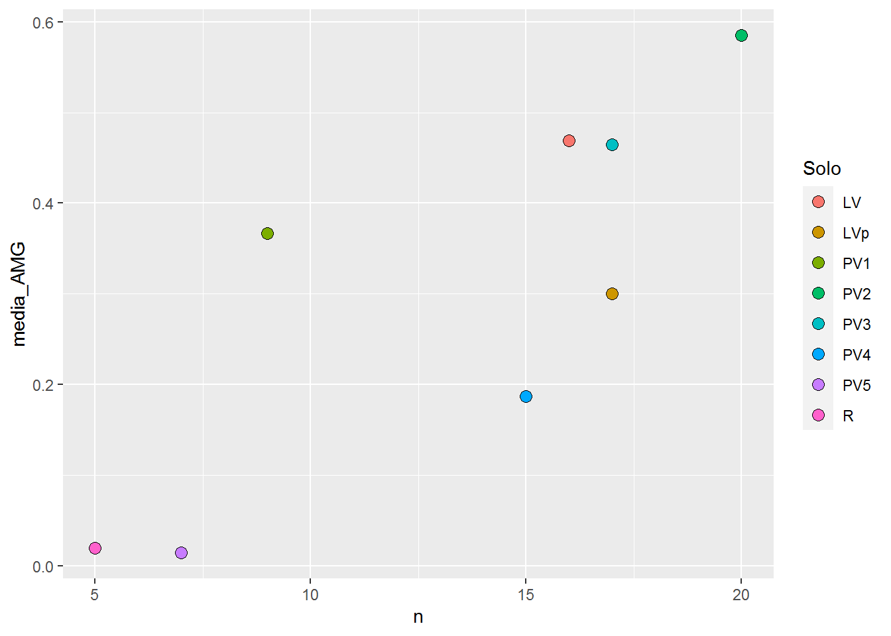
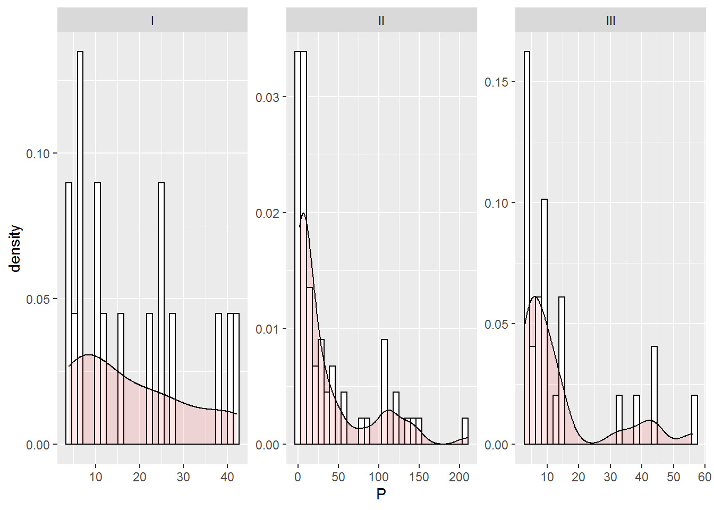

9 Manipulação de dados com o dplyr
A visualização de dados é uma ferramenta importante para a geração de insights, mas é raro que tenhamos os dados exatamente na forma necessário para essa tarefa. Muitas vezes precisamos realizar recortes no banco de dados, selecionar certas observações, criar novas variáveis, transformá-la, renomeá-las, reordenar observações entre outras manipulações.
Para a manipulação dos nossos dados, vamos utilizar o pacote dplyr, que é um pacote específico para a manipulação de dados, unido ao pacote ggplot2 é um poderoso recurso para exploração, transformação e visualização de dados. Ambos os pacotes fazem parte do tidyverse, que, como já dito, é um pacote de pacotes.
9.1 Principais funções (verbos) do dplyr.
filter(): seleciona/filtra por linhas (observações) a base de dados.
arrange(): ordena a base de dados de acordo com alguma coluna (variável).
select(): seleciona colunas (variáveis).
mutate(): modifica/transforma/cria variáveis (colunas).
summarise(): resume/agrega, variáveis (colunas) de uma base de dados.
9.2 Regras para manipulação:
1- O primeiro argumento sempre será um data.frame.
2- Demais argumentos, descrevem como deve ser a manipulação.
3- A resposta (retorno) sempre será um data.frame.
4- Manipulação é realizada com o operador “PIPE” (%>%) - CTRL SHIFT + M.
Importação dos dados
Vamos realizar a importação, via web, do banco de dados geomorfologia.txt.
library(tidyverse)
URL <- "https://raw.githubusercontent.com/arpanosso/r_data_science_fcav/master/dados/geomorfologia.txt"
geomorfologia<-read.table(URL,header = TRUE)
glimpse(geomorfologia)## Rows: 106
## Columns: 22
## $ SUP <chr> "I", "I", "I", "I", "I", "I", "I", "I", "I", "I", "I", "I",...
## $ Solo <chr> "LV", "LV", "LV", "LV", "LV", "LV", "LV", "LV", "LV", "LV",...
## $ Amostra <int> 1, 2, 3, 4, 5, 6, 7, 8, 9, 10, 11, 12, 13, 14, 15, 16, 17, ...
## $ X <int> 0, 25, 50, 75, 100, 125, 150, 175, 200, 225, 250, 275, 300,...
## $ AMG <dbl> 0.2, 0.1, 0.7, 0.4, 0.4, 0.4, 1.2, 0.8, 1.1, 1.2, 0.1, 0.2,...
## $ AG <dbl> 3.72, 4.27, 5.00, 3.80, 3.10, 3.80, 3.60, 4.70, 4.50, 5.90,...
## $ AM <dbl> 20.4, 22.6, 22.7, 23.7, 22.3, 23.8, 23.1, 25.8, 25.5, 32.8,...
## $ AF <dbl> 22.9, 23.6, 22.2, 24.4, 24.6, 19.1, 21.7, 21.1, 18.9, 19.8,...
## $ AMF <dbl> 30.0, 28.4, 26.9, 26.7, 26.9, 27.1, 26.5, 24.7, 25.4, 21.7,...
## $ SILTE <dbl> 1.2, 1.2, 1.2, 0.6, 2.1, 2.2, 0.7, 0.2, 2.5, 0.2, 2.5, 2.6,...
## $ ARGILA <dbl> 21.5, 20.4, 21.4, 20.5, 20.7, 23.5, 23.1, 22.7, 22.0, 18.5,...
## $ S_A <dbl> 0.05, 0.05, 0.05, 0.02, 0.10, 0.09, 0.03, 0.01, 0.11, 0.01,...
## $ AF_AG <dbl> 6.16, 5.53, 4.44, 6.42, 7.94, 5.03, 6.03, 4.49, 4.20, 3.36,...
## $ P <dbl> 42, 22, 41, 27, 11, 12, 11, 16, 38, 25, 25, 6, 6, 7, 5, 4, ...
## $ pH <dbl> 4.2, 3.8, 4.8, 4.0, 4.4, 4.0, 4.8, 5.4, 4.4, 5.2, 4.5, 5.1,...
## $ K <dbl> 0.27, 0.11, 0.34, 0.13, 0.11, 0.14, 0.23, 0.28, 0.19, 0.14,...
## $ Ca <dbl> 1.4, 0.4, 2.4, 0.7, 1.4, 0.6, 1.6, 3.3, 1.6, 2.9, 1.3, 1.6,...
## $ Mg <dbl> 0.3, 0.1, 0.4, 0.1, 0.3, 0.1, 0.7, 1.3, 0.5, 1.7, 0.6, 0.8,...
## $ H_Al <dbl> 5.2, 5.8, 4.2, 5.2, 4.2, 5.2, 3.4, 2.5, 5.2, 3.1, 4.2, 2.5,...
## $ SB <dbl> 1.97, 0.61, 3.14, 0.93, 1.81, 0.84, 2.53, 4.88, 2.29, 4.74,...
## $ T <dbl> 7.17, 6.41, 7.34, 6.13, 6.01, 6.04, 5.93, 7.38, 7.49, 7.84,...
## $ V <dbl> 27, 10, 43, 15, 30, 14, 43, 66, 31, 60, 32, 50, 22, 35, 36,...As práticas abaixo serão realizadas sem o armazenamento dos resultados em novos objetos, assim ao final de cada operação será utilizado a função View() para gerar a visualização do data.frame resposta em uma nova aba do RStudio.
9.3 filter()
O filter() permite que você crie um subconjuto de observações com base em seus valores. Por exemplo, vamos selecionar somente as observações linhas para superfície geomórfica II. Para isso, dentro da função filter() faremos uma operação relacional, perguntando quais os valores de SUP iguais a II.
geomorfologia %>%
filter(SUP == "II") %>%
View()Quando executamos essa linha de código o dplyr realiza a operação de filtragem e retorna um novo data.frame. As entradas não são modificadas, então, para salvar o resultado em um novo objeto, será necessário o operador de atribuição (<-) e a atribuição a um novo objeto, por exemplo dado_auxiliar:
dado_auxiliar <- geomorfologia %>%
filter(SUP == "II")
glimpse(dado_auxiliar)## Rows: 62
## Columns: 22
## $ SUP <chr> "II", "II", "II", "II", "II", "II", "II", "II", "II", "II",...
## $ Solo <chr> "LVp", "LVp", "LVp", "LVp", "LVp", "LVp", "LVp", "LVp", "LV...
## $ Amostra <int> 18, 19, 20, 21, 22, 23, 24, 25, 26, 27, 28, 29, 30, 31, 32,...
## $ X <int> 425, 450, 475, 500, 525, 550, 575, 600, 625, 650, 675, 700,...
## $ AMG <dbl> 0.2, 0.3, 0.1, 0.2, 0.2, 0.2, 0.2, 0.2, 0.3, 0.5, 0.4, 0.2,...
## $ AG <dbl> 3.64, 3.43, 3.23, 2.83, 3.85, 3.64, 3.64, 4.45, 4.24, 6.14,...
## $ AM <dbl> 27.5, 24.6, 23.7, 19.2, 16.6, 19.0, 19.0, 23.3, 20.6, 30.3,...
## $ AF <dbl> 24.5, 34.2, 25.7, 27.0, 15.9, 18.4, 18.4, 23.3, 21.9, 20.5,...
## $ AMF <dbl> 20.4, 12.6, 24.7, 28.0, 35.3, 32.1, 32.1, 26.4, 27.3, 20.2,...
## $ SILTE <dbl> 1.8, 4.0, 2.1, 4.2, 2.7, 1.0, 1.0, 1.0, 1.2, 1.6, 1.8, 0.6,...
## $ ARGILA <dbl> 22.0, 21.0, 20.5, 18.5, 25.5, 26.6, 26.6, 21.4, 24.4, 20.7,...
## $ S_A <dbl> 0.08, 0.19, 0.10, 0.23, 0.11, 0.04, 0.04, 0.05, 0.05, 0.08,...
## $ AF_AG <dbl> 6.73, 9.97, 7.96, 9.54, 4.13, 5.05, 5.05, 5.24, 5.17, 3.34,...
## $ P <dbl> 3, 2, 3, 3, 2, 2, 2, 3, 4, 4, 6, 2, 3, 2, 14, 106, 107, 83,...
## $ pH <dbl> 4.0, 3.9, 3.9, 3.8, 3.8, 3.8, 3.8, 4.0, 3.8, 3.9, 4.0, 3.8,...
## $ K <dbl> 0.05, 0.01, 0.04, 0.01, 0.02, 0.01, 0.01, 0.16, 0.04, 0.08,...
## $ Ca <dbl> 0.6, 0.3, 0.4, 0.2, 0.2, 0.2, 0.2, 0.5, 0.2, 0.4, 0.6, 0.4,...
## $ Mg <dbl> 0.2, 0.1, 0.1, 0.1, 0.1, 0.1, 0.1, 0.1, 0.1, 0.1, 0.1, 0.1,...
## $ H_Al <dbl> 5.2, 5.2, 5.8, 6.4, 6.4, 6.4, 5.8, 4.2, 5.2, 5.2, 5.8, 5.8,...
## $ SB <dbl> 0.85, 0.41, 0.54, 0.31, 0.32, 0.31, 0.31, 0.76, 0.34, 0.58,...
## $ T <dbl> 6.05, 5.61, 6.34, 6.71, 6.72, 6.71, 6.11, 4.96, 5.54, 5.78,...
## $ V <dbl> 14, 7, 9, 5, 5, 5, 5, 15, 6, 10, 12, 8, 12, 22, 54, 38, 46,...Agora vamos selecionar as observações com teor de argila maior do que 10%, provenientes da superfície III. Para realizarmos essa operação, serão necessárias duas operações relacionais, uma com a coluna ARGILA e outra com a coluna SUP, tais operações serão realizadas dentro de filter() separadas por uma vírgula.
geomorfologia %>%
filter(ARGILA > 10, SUP == "III") %>%
View()Selecione todas as observações que não sejam Regossolo, ou seja, todas os registros cujo tipo de solo seja diferente de R.
geomorfologia %>%
filter(Solo != "R") %>%
View()ou
geomorfologia %>%
filter(!(Solo == "R")) %>%
View()Anteriormente utilizamos a geometria geom_bar() para contar o número de pontos experimentais existentes em cada uma dessas superfícies. Para observarmos a tabela com a contagem poderíamos utilizar as função group_by() para agruparmos as categorias da variável SUP e, posteriormente, a função count() para realizar o processo de contagem das observações em cada grupo, gerando uma tabela com as colunas SUP para as categorias de superfície e n para a contagem.
geomorfologia %>%
group_by(SUP) %>%
count() %>%
View() Pronto, agora podemos associar o ggplot() a essa filtragem:
geomorfologia %>%
group_by(SUP) %>%
count() %>%
ggplot(aes(x=SUP, y=n)) +
geom_col()Agora vamos selecionar somente os registros referentes aos Latossolos, ou seja, todos aqueles que tenham nomes iguais a LV ou LVp.
Para essa manipulação, podemos utilizar o operador lógico de disjunção OU |.
geomorfologia %>%
filter(Solo == "LV" | Solo == "LVp") %>%
View()Um atalho útil para a solução desse problema é o operador x %in% y. Isso selecionará toda linha em que x seja um dos valores em y, então, vamos reescrever o código acima de uma forma mais elegante.
geomorfologia %>%
filter(Solo %in% c("LV","LVp")) %>%
View()9.3.1 Valores Faltantes
Um recurso importante do R que pode complicar as comparações e, consequentemente as operações de fintragem, são os valores faltantes ou NAs (not availables). NA representa um valor desconhecido, então valores faltantes se propagam nas operações, são contagiosos, ou seja, quase toda operação envolvendo valor(es) desconhecido(s) terá como resultado um valor desconhecido.
NA > 5## [1] NA10 == NA## [1] NANA + 10## [1] NANA / 2## [1] NANA == NA## [1] NASeja x a idade de Maria. Não sabemos a idade de Maria:
x <- NASeja y a idade de João. Não sabemos a idade de João:
y <- NAMaria e João têm a mesma idade?
x == y## [1] NA# Não sabemos.Se quisermos determinar se há um valor faltantE, usamos is.na().
is.na(x)## [1] TRUEis.na(y)## [1] TRUEA função filter() somente inclui linhas onde a condição é TRUE, ele exclui valores FALSE e NA. Vamos criar um exemplo rápido referente a nota de 7 alunos na primeira prova da disciplina de estatística da FCAV.
df <- tibble(nome = c("Ana","Beatriz","Douglas","Luis","Marcela","Paulo","Renata"),
P1 = c(8,NA,6,3,NA,6,3),
P2=c(9,7,4,2,NA,NA,4),
Psub=c(NA,8,7,9,NA,5,6))
df## # A tibble: 7 x 4
## nome P1 P2 Psub
## <chr> <dbl> <dbl> <dbl>
## 1 Ana 8 9 NA
## 2 Beatriz NA 7 8
## 3 Douglas 6 4 7
## 4 Luis 3 2 9
## 5 Marcela NA NA NA
## 6 Paulo 6 NA 5
## 7 Renata 3 4 6Se quisermos realizar a filtragem para todos os valores de P1 maiores que 4:
df %>%
filter(P1 > 4)## # A tibble: 3 x 4
## nome P1 P2 Psub
## <chr> <dbl> <dbl> <dbl>
## 1 Ana 8 9 NA
## 2 Douglas 6 4 7
## 3 Paulo 6 NA 5Se quisermos preservar o NA, devemos pedir explicitamente, caso contrário eles serão excluídos da filtragem.
df %>%
filter(P1 > 4 | is.na(P1))## # A tibble: 5 x 4
## nome P1 P2 Psub
## <chr> <dbl> <dbl> <dbl>
## 1 Ana 8 9 NA
## 2 Beatriz NA 7 8
## 3 Douglas 6 4 7
## 4 Marcela NA NA NA
## 5 Paulo 6 NA 5Vamos selecionar os alunos que fizeram, pelo menos, uma prova.
df %>%
filter(!is.na(P1)|!is.na(P2)|!is.na(Psub))## # A tibble: 6 x 4
## nome P1 P2 Psub
## <chr> <dbl> <dbl> <dbl>
## 1 Ana 8 9 NA
## 2 Beatriz NA 7 8
## 3 Douglas 6 4 7
## 4 Luis 3 2 9
## 5 Paulo 6 NA 5
## 6 Renata 3 4 6Vamos selecionar os alunos que fizeram as 3 provas.
df %>%
filter(!is.na(P1), !is.na(P2), !is.na(Psub))## # A tibble: 3 x 4
## nome P1 P2 Psub
## <chr> <dbl> <dbl> <dbl>
## 1 Douglas 6 4 7
## 2 Luis 3 2 9
## 3 Renata 3 4 69.3.2 Strings e Regex
A função str_detect() pertence ao pacote stringr e tem a finalidade de detectar a presença ou a ausência de um padrão de caracteres dentro de uma string (cadeia de caracteres).
O pacote stringr faz parte do pacote tidyverse, cuja sintaxe é o Regex do inglês (Regular Expressions) são expressões regulares, ou seja, ferramenta para descrever os padrões dentro da string.
Portanto, uma breve explicação se faz necessária para aplicações posteriores.
Vamos criar duas strings:
string1 <- "Isso é uma string"
string2 <- 'Se você quiser adicionar "aspas duplas" dentro da string, utilize aspas simples'
string1## [1] "Isso é uma string"string2## [1] "Se você quiser adicionar \"aspas duplas\" dentro da string, utilize aspas simples"A representação impressa de uma string mostra as barras transversas \, já o conteúdo bruto da string pode ser apresentado por writeLines().
writeLines(string2)## Se você quiser adicionar "aspas duplas" dentro da string, utilize aspas simplesObserve mais esse exemplo.
* \" aspas duplas
* \\ caractere de barra transversa
* \n nova linha
* \t tabulação
* \u00b5 caracteres que não pertencem ao inglês.
string3 <- c("\"", "\n", "\\", "A\tB", "\n", "\u00b5")
string3## [1] "\"" "\n" "\\" "A\tB" "\n" "µ"writeLines(string3)## "
##
##
## \
## A B
##
##
## µO pacote básico do R contém muitas funções para trabalhar com strings, mas vamos evitá-las porque podem ser inconsistentes, o que as torna difíceis de lembrar. Já o pacote stringr é de mais simples utilização, pois têm nomes intuitivos, todos começam com str_. Por exemplo, str_length() informa o número de caracteres em uma string:
meu_texto <- c('a','R para data science', NA, 'UNESP-FCAV')
str_length(meu_texto)## [1] 1 19 NA 10A combinação de strings pode ser feita com o str_c(), utilizando o argumento sep para controlar o separador entre as strings.
str_c("objeto", 1:5, sep="_")## [1] "objeto_1" "objeto_2" "objeto_3" "objeto_4" "objeto_5"OBS Poderíamos ter o mesmo efeito com a função paste() do pacote base do R.
paste("objeto", 1:5, sep="_")## [1] "objeto_1" "objeto_2" "objeto_3" "objeto_4" "objeto_5"Contudo, observe a forma com a qual as funções operam valores faltantes NA.
paste("objeto", c(1,NA,3), sep="_")## [1] "objeto_1" "objeto_NA" "objeto_3"str_c("objeto", c(1,NA,3), sep="_")## [1] "objeto_1" NA "objeto_3"str_c("objeto", str_replace_na(c(1,NA,3)), sep="_")## [1] "objeto_1" "objeto_NA" "objeto_3"Como a maioria das outras funções em R, os valores ausentes se propagam nas operações. Se você quiser que eles sejam impressos como NA, use str_replace_na():
str_c("---", meu_texto, "---")## [1] "---a---" "---R para data science---"
## [3] NA "---UNESP-FCAV---"str_c("---", str_replace_na(meu_texto), "---")## [1] "---a---" "---R para data science---"
## [3] "---NA---" "---UNESP-FCAV---"Para colapsar um vetor de strings em uma única string, use o argumento colappse n função str_c():
y <- c("A","mais","bonita")
str_c(y, collapse = " " )## [1] "A mais bonita"str_c(meu_texto, collapse = ", ") # propagação do NA## [1] NAstr_c(str_replace_na(meu_texto), collapse = ", ")## [1] "a, R para data science, NA, UNESP-FCAV"Podemos extrair partes de uma string usando str_sub(), que leva os argumentos inicial e final que fornecem a posição (inclusiva) da substring. No exemplo abaixo, vamos extrair do primeiro ao quarto caracter de cada string do objeto x.
x <- c ("testemunha","escarificador","arado de disco","grade aradora","subsolador")
str_sub(x,1,4)## [1] "test" "esca" "arad" "grad" "subs"Números negativos contam de trás para frente para a realizar a extração.
str_sub(x,-4,-1)## [1] "unha" "ador" "isco" "dora" "ador"Podemos utilizar essa função para alterar uma string, por exemplo, passar as primeira letras para maiúsculas
str_sub(x,1,1) <- str_to_upper(str_sub(x,1,1))
x## [1] "Testemunha" "Escarificador" "Arado de disco" "Grade aradora"
## [5] "Subsolador"Ou podemos passar todas para maiúsculas.
str_sub(x,1,str_length(x)) <- str_to_upper(str_sub(x,1,256))
x## [1] "TESTEMUNHA" "ESCARIFICADOR" "ARADO DE DISCO" "GRADE ARADORA"
## [5] "SUBSOLADOR"Ou podemos passar todas para minúsculas, novamente…
str_sub(x,1,str_length(x)) <- str_to_lower(str_sub(x,1,256))
x## [1] "testemunha" "escarificador" "arado de disco" "grade aradora"
## [5] "subsolador"Podemos buscar combinações simples, para facilitar a verificação, vamos utilizar str_view().
str_view(x, "ad")Podemos utilizar o ponto . para encontrar a combinação com qualquer caractere (exceto no início ou no final da string).
str_view(x, ".a.")Se estivermos procurando o caractere ponto ., vamos utilizar \\..
meu_texto_2 <- c("abc", "a*b", "a b" ,"a.c")
str_view(meu_texto_2, "\\.")Por default, as expressões regulares corresponderão a qualquer parte de uma string. Muitas vezes, é útil ancorar a expressão regular de forma que corresponda desde o início ou ao final da string. Assim, podemos utilizar as âncoras:
*^ para combinar com o início da string.
*$ para combinar com o final da string.
str_view(x, "^a")str_view(x, "r$")Para forçar uma expressão regular a corresponder apenas a uma string completa, ancore-a com ^ e $:
z<-c("Arado","Arado de disco","Arado de aiveca", "Grade aradora")
str_view(z,"Arado")str_view(z,"^Arado$")Voltando à manipulação dos dados de geomorfologia, podemos filtrar todos os Argissolos utilizando o regex, ou seja, podemos selecionar todos aqueles solos que començam com a letra P.
geomorfologia %>%
filter(str_detect(Solo,"^P")) %>% # ^, significa "começa com"
View()Selecione os registros cujo solo é “PV4.”
geomorfologia %>%
filter(str_detect(Solo,"PV4")) %>%
View()geomorfologia %>%
filter(str_detect(Solo,"4$")) %>%
View()Podemos criar nossas próprias classes de personagens usando [ ]:
[abc]: corresponde a, b ou c.
[a-z]: corresponde a todos os caracteres entre a e z.
[^abc]: corresponde a qualquer coisa, exceto a, b ou c.
[\^\-]: corresponde a ^ ou -.
Por exemplo, retirando, novamente, o Regossolo.
geomorfologia %>%
filter(str_detect(Solo,"[^R]")) %>%
View()[:space:]: caracteres de espaço (basicamente equivalente a \s).
[:blank:]: espaço e tabulação.
Selecione os registros que terminam com um número.
geomorfologia %>%
filter(str_detect(Solo,"[:digit:]$")) %>%
View()Selecione todos aqueles que não tenham dígitos nos nomes.
geomorfologia %>%
filter(!str_detect(Solo,"[:digit:]")) %>%
View()OBS: Todos eles vão dentro de [ ] para classes de caracteres, ou seja, [[:dígito:]AX] corresponde a todos os dígitos, a letra A e a letra X.
Selecione todos Regossolo ou Latossolo.
geomorfologia %>%
filter(str_detect(Solo,"R|LV")) %>%
View()Selecione todos Regossolo ou Latossolo LV, excluindo o LVp.
geomorfologia %>%
filter(str_detect(Solo,"R|^LV$")) %>%
View()Figure 9.1: Um exemplo patológico devido à complexidade de endereços de e-mail.
9.4 arrange()
A funçao arrange() funciona de maneira similar a filter(), mas, ao invés de selecionar linhas, ela muda a ordem delas. Ela recebe um data.frame e um conjunto de nomes de colunas pelos quais ordenar. Se fornecermos mais de um nome de coluna, cada coluna adicional será usada para desempate nos valores das colunas anteriores.
Vamos classificar os registros por ordem crescente de teor de argila.
geomorfologia %>%
arrange(ARGILA) %>%
View()Classifique os registros por ordem decrescente de teor de acidez \(H+Al\). Para isso vamos utilizar a função desc() que reordena a coluna em ordem descendente.
geomorfologia %>%
arrange(desc(H_Al)) %>%
View()Classifique os registros por ordem alfabéticas de solos e utilize como crotério de desempate o teor de fósforo disponível no solo em ordem decrescente.
geomorfologia %>%
arrange(Solo, desc(P)) %>%
View()Valores flatantes são sempre colocados no final, veja o exemplo abaixo utilizando as notas de alunos anterioremente criadas.
df %>%
arrange(desc(Psub))## # A tibble: 7 x 4
## nome P1 P2 Psub
## <chr> <dbl> <dbl> <dbl>
## 1 Luis 3 2 9
## 2 Beatriz NA 7 8
## 3 Douglas 6 4 7
## 4 Renata 3 4 6
## 5 Paulo 6 NA 5
## 6 Ana 8 9 NA
## 7 Marcela NA NA NA9.5 select()
Não é incomum obter conjuntos de dados com centenasou até milhares de variáveis. Neste caso, o rimeiro desafio frequentemente é limitar-se às variávies em que você realmente está interessado. A função select() permite que você foque em um subconjunto útil usando operações baseadas em nomes de vaiávies.
Seleciona colunas de uma tabela e pode ser utilizado com as funções:
* starts_with("abc"): seleciona nomes que começam com "abc"
* ends_with("xyz"): seleciona nomes que terminam com "xyz"
* contains("ijk"): seleciona nomes que contêm "ijk"
* matches("(.)\\1"): seleciona nomes usando Expressões Regulares
* num_range("x", 1:3): seleciona x1, x2 e x3Selecione as colunas SUP, Solo e ARGILA.
geomorfologia %>%
select(SUP, Solo, ARGILA) %>%
View()Selecione as colunas que comecem com a letra “A.”
geomorfologia %>%
select(starts_with("A")) %>%
View()Selecione as colunas que NÃO comecem com a letra “A.”
geomorfologia %>%
select(-starts_with("A")) %>%
View()9.6 mutate()
Vamos voltar ao exemplo das notas dos alunos, que estão armazenadas no objeto df.
df## # A tibble: 7 x 4
## nome P1 P2 Psub
## <chr> <dbl> <dbl> <dbl>
## 1 Ana 8 9 NA
## 2 Beatriz NA 7 8
## 3 Douglas 6 4 7
## 4 Luis 3 2 9
## 5 Marcela NA NA NA
## 6 Paulo 6 NA 5
## 7 Renata 3 4 6Devemos agora calcular a média final do aluno, seguindo o critério:
\[
MF = \frac{P1+P2}{2}
\]
Se o aluno fez a prova substitutiva (Psub) ela deve substituir a prova faltante, ou a menor nota de prova.
df %>%
mutate(
SOMA = if_else(is.na(Psub),P1+P2,
if_else(is.na(P1),P2+Psub,
if_else(is.na(P2),P1+Psub,
if_else(P1<P2,P2+Psub,P1+Psub)))),
MF=SOMA/2
)## # A tibble: 7 x 6
## nome P1 P2 Psub SOMA MF
## <chr> <dbl> <dbl> <dbl> <dbl> <dbl>
## 1 Ana 8 9 NA 17 8.5
## 2 Beatriz NA 7 8 15 7.5
## 3 Douglas 6 4 7 13 6.5
## 4 Luis 3 2 9 12 6
## 5 Marcela NA NA NA NA NA
## 6 Paulo 6 NA 5 11 5.5
## 7 Renata 3 4 6 10 5Calcule a soma dos teores de ARGILA + SILTE e, em seguida, coloque o teor de fósforo na escala logarítmica.
geomorfologia %>%
mutate(
ARG_SILT = ARGILA + SILTE,
log_P = log10(P)) %>%
View()Classifique a Textura do solo.
Figure 9.2: A figura 1 apresenta os intervalos de argila e a respectiva classificação do solo. . FONTE (https://www.pedologiafacil.com.br/textura.php)
geomorfologia %>%
mutate(
TEXTURA = case_when(
ARGILA < 15 ~ "Arenosa",
ARGILA <= 35 ~ "Media",
ARGILA <= 60 ~ "Argilosa",
ARGILA > 60 ~ "Muito argilosa",
TRUE ~ "Sem classificação")
)9.7 Resumos Agrupados com summarize()
A função summarize() reduz um data frame a uma única linha:
geomorfologia %>%
summarize(media_ARGILA = mean(ARGILA, na.rm = TRUE))## media_ARGILA
## 1 14.60189Essa função é extremamente útil quando combinada à função group_by(). Isso muda a unidade da análise de tdo o conjunto de dados para os grupos de indivíduais. Então, ao usarmos os verbos do dplyr em um data.frame agrupado, eles são automaticamente aplicados “por grupo.” Por exemplo, vamos aplicar o mesmo código anterior ao data.frame agrupado por superfície geomórfica, obteremos o atraso médio por data.
geomorfologia %>%
group_by(SUP) %>%
summarize(media_ARGILA = mean(ARGILA, na.rm = TRUE))## # A tibble: 3 x 2
## SUP media_ARGILA
## * <chr> <dbl>
## 1 I 21.1
## 2 II 14.8
## 3 III 10.19.7.1 Valores faltantes
O argumento na.rm = TRUE esse arguento é utilizado para remoção dos valores faltantes da variáviel. Isso porque as funções de agregação obedecem à regra usual de NAs, ou seja, qualquer valor faltando na entrada, a saída será um valor faltante. Assim o uso desse argumento é essencial.
9.7.2 Counts
Sempre que fizer agregação, sugerimos que inclua uma contagem n() ou uma contagem de valores não faltantes (sum(!is.na(x))). Deste modo podemos verificar que não estamos tirando conclusões com base em quantidades muito pequenas de dados.
Por exemplo, vamos pedir a média da variável AMG (areia muito grossa) para cada tipo de solo identificado no levantamento em função do número de observações (n). Para isso vamos unir as funções group_by(), summarize() e ggplot().
geomorfologia %>%
group_by(Solo) %>%
summarize( media_AMG = mean(AMG, na.rm=TRUE),
n = n()) %>%
ggplot(aes(x=n, y=media_AMG, fill=Solo)) +
geom_point(shape=21, size=3)
Observe que PV1, PV5 e R apresentaram \(n < 10\).
9.7.3 Algumas funções de resumo
Aliadas à média e à contagem, várias outras funções podem ser utilizadas em R.
Medidas de localização
A função median() retorna a mediana do conjunto de dados, ou seja, um valor onde \(50\%\) de \(x\) está acima e \(50\%\) está abaixo dela. Já a média mean() é a soma dividida pelo comprimento. Assim, a mediana não é influenciada por valores extremos, diferente da média. Compare a diferença entre média e mediana para as variáveis ARGILA e em seguida P.
# Para Argila
geomorfologia %>%
group_by(SUP) %>%
summarize(Media = mean(ARGILA, na.rm = TRUE),
Mediana = median(ARGILA, na.rm = TRUE))## # A tibble: 3 x 3
## SUP Media Mediana
## * <chr> <dbl> <dbl>
## 1 I 21.1 20.7
## 2 II 14.8 14.3
## 3 III 10.1 10.1# Para P
geomorfologia %>%
group_by(SUP) %>%
summarize(Media = mean(P, na.rm = TRUE),
Mediana = median(P, na.rm = TRUE))## # A tibble: 3 x 3
## SUP Media Mediana
## * <chr> <dbl> <dbl>
## 1 I 17.8 12
## 2 II 34.9 12.5
## 3 III 14.0 9Medidas de dispersão
O desvio padrão sd() é a medida de dispersão padrão. Outras medidas podem ser utilizadas, como a variação interquartil IQR() e o desvio absoluto mediano mad() são equivalentes obustos que podem ser mais úteis se você tiver outliers.
# Para P
geomorfologia %>%
group_by(SUP) %>%
summarize(Media = mean(P, na.rm = TRUE),
Mediana = median(P, na.rm = TRUE),
DP=sd(P, na.rm = TRUE),
IQR=IQR(P, na.rm = TRUE),
DA_mediano = mad(P, na.rm = TRUE))## # A tibble: 3 x 6
## SUP Media Mediana DP IQR DA_mediano
## * <chr> <dbl> <dbl> <dbl> <dbl> <dbl>
## 1 I 17.8 12 13.2 19 11.9
## 2 II 34.9 12.5 47.5 39.5 15.6
## 3 III 14.0 9 14.7 10 7.41Medidas de classificação
São os valores mínimo/máximo e os quantis. Quantis são generalizações da mediana. Por exemplo, quantile(x, 0.25) encontrará o valor de x que é maior que \(25\%\) dos valores e menor do que os \(75\%\) restantes. Já quantile(x, 0.75) encontrará o valor de x que é maior que \(75\%\) dos valores e menor do que os \(25\%\) restantes.
# Para P
geomorfologia %>%
group_by(SUP) %>%
summarize(Media = mean(P, na.rm = TRUE),
Mediana = median(P, na.rm = TRUE),
DP=sd(P, na.rm = TRUE),
IQR=IQR(P, na.rm = TRUE),
DA_mediano = mad(P, na.rm = TRUE),
Mínimo = min(P, na.rm = TRUE),
Q1 = quantile(P, 0.25, na.rm = TRUE),
Q3 = quantile(P, 0.75, na.rm = TRUE),
Máximo = max(P, na.rm = TRUE)) ## # A tibble: 3 x 10
## SUP Media Mediana DP IQR DA_mediano Mínimo Q1 Q3 Máximo
## * <chr> <dbl> <dbl> <dbl> <dbl> <dbl> <dbl> <dbl> <dbl> <dbl>
## 1 I 17.8 12 13.2 19 11.9 4 6 25 42
## 2 II 34.9 12.5 47.5 39.5 15.6 2 4 43.5 209
## 3 III 14.0 9 14.7 10 7.41 3 4 14 56Contagens
Vamos agora contar o número de observações e o número de valores não faltantes, utilizando as funções n() e sum(!is.na(x)):
# Para P
geomorfologia %>%
group_by(SUP) %>%
summarize(Media = mean(P, na.rm = TRUE),
Mediana = median(P, na.rm = TRUE),
DP=sd(P, na.rm = TRUE),
IQR=IQR(P, na.rm = TRUE),
DA_mediano = mad(P, na.rm = TRUE),
Mínimo = min(P, na.rm = TRUE),
Q1 = quantile(P, 0.25, na.rm = TRUE),
Q3 = quantile(P, 0.75, na.rm = TRUE),
Máximo = max(P, na.rm = TRUE),
N=n(),
N_na = sum(!is.na(P))) ## # A tibble: 3 x 12
## SUP Media Mediana DP IQR DA_mediano Mínimo Q1 Q3 Máximo N
## * <chr> <dbl> <dbl> <dbl> <dbl> <dbl> <dbl> <dbl> <dbl> <dbl> <int>
## 1 I 17.8 12 13.2 19 11.9 4 6 25 42 17
## 2 II 34.9 12.5 47.5 39.5 15.6 2 4 43.5 209 62
## 3 III 14.0 9 14.7 10 7.41 3 4 14 56 27
## # ... with 1 more variable: N_na <int>Contagens e proporções de valores lógicos sum(x > 10), mean(y == 0). Quando usado com funções numéricas, TRUE é convertido em \(1\), e FALSE em \(0\). ISso torna sum() e mean() muito úteis: sum() retorna o número de TRUE em x e mean(x) retorna a proporção.
Por exemplo, em cada supefície geomórfica, vamos calcular o número e a proporção de valores de P inferiores a 10.
# Para P
geomorfologia %>%
group_by(SUP) %>%
summarize(Media = mean(P, na.rm = TRUE),
Mediana = median(P, na.rm = TRUE),
DP=sd(P, na.rm = TRUE),
IQR=IQR(P, na.rm = TRUE),
DA_mediano = mad(P, na.rm = TRUE),
Mínimo = min(P, na.rm = TRUE),
Q1 = quantile(P, 0.25, na.rm = TRUE),
Q3 = quantile(P, 0.75, na.rm = TRUE),
Máximo = max(P, na.rm = TRUE),
N=n(),
N_na = sum(!is.na(P)),
n10=sum(P<10),
n10p=mean(P<10)) ## # A tibble: 3 x 14
## SUP Media Mediana DP IQR DA_mediano Mínimo Q1 Q3 Máximo N
## * <chr> <dbl> <dbl> <dbl> <dbl> <dbl> <dbl> <dbl> <dbl> <dbl> <int>
## 1 I 17.8 12 13.2 19 11.9 4 6 25 42 17
## 2 II 34.9 12.5 47.5 39.5 15.6 2 4 43.5 209 62
## 3 III 14.0 9 14.7 10 7.41 3 4 14 56 27
## # ... with 3 more variables: N_na <int>, n10 <int>, n10p <dbl>Medidas da Forma da Distribuição
As medidas da forma da distribuição são os coeficientes de assimetria e curtosis.
Assimetria - é uma medida da simetria da distribuição de frequência. Ela mostra se os desvios da média são maiores para um lado da distribuição do que para o outro. Usualmente, a estimativa do Coeficiente de Assimetria pode ser calculada pela fórmula:
\[ G_1 = \frac{n}{(n-1)(n-2)} \cdot \frac{\sum_{i=1}^n(x_i - \bar{x})^3}{s^3} \]
Vamos utilizar a função skewness() do pacote agricolae para calcular o coeficente de assimetria.
# Para P
geomorfologia %>%
group_by(SUP) %>%
summarize(Media = mean(P, na.rm = TRUE),
Mediana = median(P, na.rm = TRUE),
DP=sd(P, na.rm = TRUE),
IQR=IQR(P, na.rm = TRUE),
DA_mediano = mad(P, na.rm = TRUE),
Mínimo = min(P, na.rm = TRUE),
Q1 = quantile(P, 0.25, na.rm = TRUE),
Q3 = quantile(P, 0.75, na.rm = TRUE),
Máximo = max(P, na.rm = TRUE),
N=n(),
N_na = sum(!is.na(P)),
n10=sum(P<10),
n10p=mean(P<10),
G1 = agricolae::skewness(P)) ## # A tibble: 3 x 15
## SUP Media Mediana DP IQR DA_mediano Mínimo Q1 Q3 Máximo N
## * <chr> <dbl> <dbl> <dbl> <dbl> <dbl> <dbl> <dbl> <dbl> <dbl> <int>
## 1 I 17.8 12 13.2 19 11.9 4 6 25 42 17
## 2 II 34.9 12.5 47.5 39.5 15.6 2 4 43.5 209 62
## 3 III 14.0 9 14.7 10 7.41 3 4 14 56 27
## # ... with 4 more variables: N_na <int>, n10 <int>, n10p <dbl>, G1 <dbl>Se as observações apresentam distribuição simétrica, \(G_1= 0\), ou próximas a \(0\).
O coeficiente de assimetria é o indicativo mais comum de Normalidade. Em dados assimétricos, existem dúvidas sobre qual medida de tendência central devemos utilizar para resumir os dados. Nesses casos, comparações entre médias de diferentes conjuntos de observações são não confiáveis, uma vez que a variância pode diferir substancialmente de um conjunto de observações para outro.
geomorfologia %>%
ggplot(aes(x=P,y=..density..)) +
geom_histogram(bins=30, color="black", fill="white")+
facet_wrap(~SUP, scales = "free")+
geom_density(alpha=0.1,fill="red")
Curtose - Indica o grau de achatamento de uma distribuição, é a medida do peso das caudas da distribuição. Se as observações seguem uma distribuição normal, então o coeficiente de curtose é zero, e sua estimativa é dado por:
\[ G_2 = \frac{\frac{\sum{i=1}^n(x-\bar{x})^4}{s^4}}{(n-3)(n-2)(n-1)}-3 \cdot \frac{(n-1)^2}{(n-2)(n-3)} \]
Vamos utilizar a função kurtosis() do pacote agricolae para calcular o coeficente de assimetria.
# Para P
geomorfologia %>%
group_by(SUP) %>%
summarize(Media = mean(P, na.rm = TRUE),
Mediana = median(P, na.rm = TRUE),
DP=sd(P, na.rm = TRUE),
IQR=IQR(P, na.rm = TRUE),
DA_mediano = mad(P, na.rm = TRUE),
Mínimo = min(P, na.rm = TRUE),
Q1 = quantile(P, 0.25, na.rm = TRUE),
Q3 = quantile(P, 0.75, na.rm = TRUE),
Máximo = max(P, na.rm = TRUE),
N=n(),
N_na = sum(!is.na(P)),
n10=sum(P<10),
n10p=mean(P<10),
G1 = agricolae::skewness(P),
G2 = agricolae::kurtosis(P)) ## # A tibble: 3 x 16
## SUP Media Mediana DP IQR DA_mediano Mínimo Q1 Q3 Máximo N
## * <chr> <dbl> <dbl> <dbl> <dbl> <dbl> <dbl> <dbl> <dbl> <dbl> <int>
## 1 I 17.8 12 13.2 19 11.9 4 6 25 42 17
## 2 II 34.9 12.5 47.5 39.5 15.6 2 4 43.5 209 62
## 3 III 14.0 9 14.7 10 7.41 3 4 14 56 27
## # ... with 5 more variables: N_na <int>, n10 <int>, n10p <dbl>, G1 <dbl>,
## # G2 <dbl>